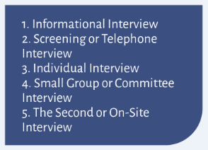

5. Match the definition to its corresponding type of interview.
Types of interview
There are a multitude of interview types that serve different scenarios. Knowing what to expect can help you to meet your goals.

These interviews mean meeting a
panel of decision makers at once.
This can be intimidating if you are
not well prepared in advance. More
than one interviewer means effi-
ciency and an opportunity for diffe-
rent opinions.
These are proving to be a more cost
effective way to screen candidates.
Slots range from 10 to 30 minutes.
Candidates can prepare for it as if it
is an open book exam. They can
have CV, the job description, list of
This interview means you have been successful on the first occasion and they would like to know more. These interviews can be longer, some lasting half or a full-day. They often mean meeting three to five people which can include Human Resources, the line manager, office staff and the head of department. This is usually the last stage before an offer of employment is made.
The objective is to seek advice and learn more about a particular employer. Interviewing experts in their field is one more way to add to your employment knowledge base.
It is often referred to as a “personal interview”. This is the most common type of interview and is usually held face to face at the company’s offices. It ranges from 30 to 90 minutes. Shorter interviews will mean concise answers and longer interviews allow more time to go into detail.